Справочник по системному программированию · модуль 2 · процессы
2.4
Потоки
Агент учится считать потоки процесса, а программа на C сама запускает потоки и дожидается их. В конце — гонка: четыре потока теряют до трёх четвертей общих прибавок.
- Категория
- Процессы
- Уровень
- Начальный
- Что получится
agent/core/core_threads.c,count_threads.c, новыйbrain.py- Сколько занимает
- Пара 7, около сорока пяти минут за компьютером
Суть за две минуты
Процесс — бригада, потоки — её рабочие. Они делают дело одновременно и пользуются одним общим складом — памятью процесса.
Бригадир есть всегда: это главный поток, с него начинается main.
Система, как отдел кадров, держит на каждый процесс карточку, и там написано, сколько в нём потоков. Наша функция просто читает эту цифру.
Рабочих наняли и не отпустили — цифра растёт. Это утечка потоков.
Четверо по миллиону раз пишут «+1» на одной доске. Двое смотрят одновременно, оба видят 41, оба пишут 42 — одна прибавка пропала.
Итог вместо 4 000 000 — от 1 до 3 млн. Спасает «кликер» — атомарная прибавка.
За пару:функция core_proc_threads → программа, у которой видно 1 → 5 → 1 поток → мозг находит самые многопоточные процессы → гонка в коде от помощника ИИ.
§1Задача главы
В ЛР 7 потоки процесса считали мониторы: Монитор ресурсов и PowerShellМониторинг системы и ps -Mtop. В этой главе ядро агента получает функцию core_proc_threads: она возвращает число потоков процесса по его номеру. Чтобы её проверить, программа на C сама запускает потоки — функцией CreateThreadpthread_create. Мозг находит процессы, у которых потоков больше всего.
Путь вопроса от мозга до системы и обратно:
Путь вопроса «сколько потоков»
мозг
proc_threads(pid)номер процессаядро агента
core_proc_threadsснимок Toolhelp32proc_pidinfo/proc/PID/statсистема
запись о процессесколько потоков сейчасмозг
most_threads()у кого потоков больше всегоБирюзовые карточки — Python, янтарная — ядро на C, серая — система. Ответ — одно целое число, переводить единицы не нужно.
Путь короче, чем в главе 2.3: система отдаёт готовое число, ядру остаётся его передать. Поток — ход выполнения кода внутри процесса, как в ЛР 7.
Зачем это нужно в работе
- Найти утечку. Число потоков растёт и не падает — служба запускает потоки и забывает завершать.
- Понять загрузку. 400% в ЛР 7 — это четыре занятых потока.
- Поймать гонку. Ошибки потоков не видны с одного запуска — их ловит проверка итога.
Глава продолжает репозиторий sysprog-start после главы 2.3: в agent/core лежат core.h, core_info.c, core_procs.c, core_spawn.c и core_cpu.c, в agent/brain — brain.py с подсчётом загрузки. Команды выполняются во встроенном терминале VS Code, запущенного из окна x64 Native Tools Command Prompt for VS 2022.Команды выполняются во встроенном терминале VS Code в папке agent/core.
Первая часть начинается с объявления новой функции в core.h.
§2Шаг 1. Объявить функцию в core.h
Ответ функции — одно число, поэтому новая структура не нужна: ядро запишет число потоков по адресу count. Тип — int32_t: потоков у процесса бывают тысячи, но не миллиарды.
CORE_API int core_proc_cpu(int64_t pid, struct core_cpu *out);
CORE_API int core_proc_cpu(int64_t pid, struct core_cpu *out); CORE_API int core_proc_threads(int64_t pid, int32_t *count);
Договор тот же, что у core_proc_cpu: 0 — число записано, иначе код ошибки системы. Процесса нет — 8732, ошибка в параметрах — 8722.
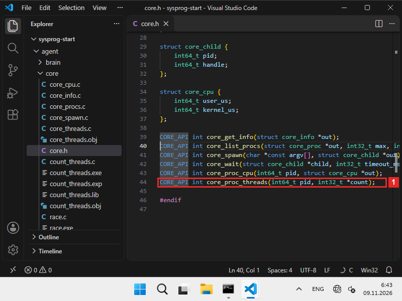
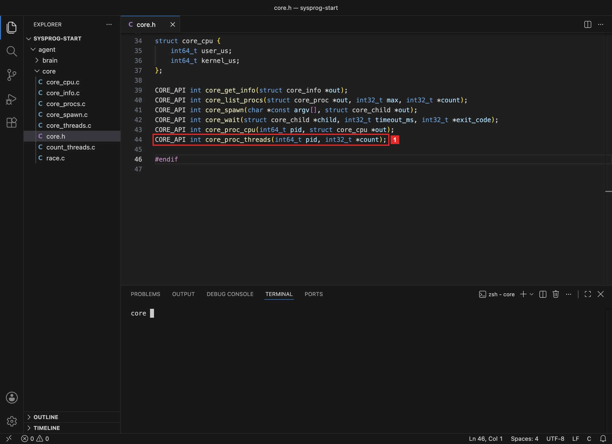
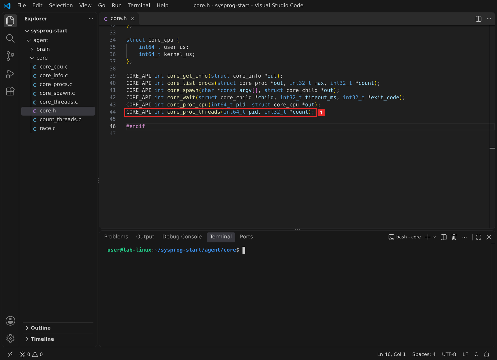
Что получилось.В core.h объявлена функция числа потоков. Теперь её нужно написать для своей системы.
§3Шаг 2. Написать core_threads.c
Функция — в новом файле agent/core/core_threads.c. Число потоков каждая система уже хранит в записи о процессе, и источники знакомы по прошлым главам:
Где система хранит число потоков процесса
| Система | Откуда | Поле | Нет процесса |
|---|---|---|---|
| Windows | снимок TH32CS_SNAPPROCESS | cntThreads | 87 |
| macOS | proc_pidinfo(PROC_PIDTASKINFO) | pti_threadnum | 3 |
| Linux | /proc/PID/stat | поле 20 num_threads | 2 |
macOS и Linux берут число из тех же источников, что процессорное время в главе 2.3, Windows — из того же снимка, что список процессов в главе 2.1.
В каждой строке таблицы — откуда взять число и в каком поле оно лежит. Последний столбец — ответ, когда процесса нет: коды те же, что у core_proc_cpu. Поэтому файл короче core_cpu.c: найти процесс, взять поле, вернуть.
#include <windows.h> #include <tlhelp32.h> #include "core.h" int core_proc_threads(int64_t pid, int32_t *count) { PROCESSENTRY32W pe; if (count == NULL || pid < 0) return ERROR_INVALID_PARAMETER; HANDLE snap = CreateToolhelp32Snapshot(TH32CS_SNAPPROCESS, 0); if (snap == INVALID_HANDLE_VALUE) return (int)GetLastError(); pe.dwSize = sizeof pe; BOOL ok = Process32FirstW(snap, &pe); while (ok && pe.th32ProcessID != (DWORD)pid) ok = Process32NextW(snap, &pe); CloseHandle(snap); if (!ok) return ERROR_INVALID_PARAMETER; *count = (int32_t)pe.cntThreads; return 0; }
#include <errno.h> #include <libproc.h> #include "core.h" int core_proc_threads(int64_t pid, int32_t *count) { struct proc_taskinfo ti; if (count == NULL || pid < 0) return EINVAL; int n = proc_pidinfo((int)pid, PROC_PIDTASKINFO, 0, &ti, sizeof ti); if (n <= 0) return errno != 0 ? errno : ESRCH; if (n < (int)sizeof ti) return ESRCH; *count = ti.pti_threadnum; return 0; }
#include <errno.h> #include <stdio.h> #include <string.h> #include "core.h" int core_proc_threads(int64_t pid, int32_t *count) { char path[64], line[512]; long threads; if (count == NULL || pid < 0) return EINVAL; snprintf(path, sizeof path, "/proc/%lld/stat", (long long)pid); FILE *f = fopen(path, "r"); if (f == NULL) return errno; size_t len = fread(line, 1, sizeof line - 1, f); fclose(f); line[len] = '\0'; char *close = strrchr(line, ')'); if (close == NULL) return EINVAL; if (sscanf(close + 2, "%*c %*d %*d %*d %*d %*d %*u %*u %*u %*u %*u %*u %*u %*d %*d %*d %*d %ld", &threads) != 1) return EINVAL; *count = (int32_t)threads; return 0; }
Как функция узнаёт число потоков
Считать потоки самим не нужно: система и так ведёт учёт. На каждый процесс у неё заведена карточка, и там написано, сколько у процесса потоков прямо сейчас. Функция идёт к этой карточке и переписывает цифру.
Так же работает отдел кадров. На вопрос «сколько человек в бригаде номер 1212?» сотрудник открывает папку бригады и читает: «пять». Пересчитывать людей по головам никто не бегает.
мозг
«сколько потоков у 1212?»вызывает proc_threadsядро агента
идёт в отдел кадроввызов системысистема
открывает карточку 1212запись в снимке процессовструктураproc_taskinfoфайл /proc/PID/statмозг
получает «5»число, без перевода единицЧто есть что. Отдел кадров — система. Папка бригады — запись в снимке процессовструктура proc_taskinfoфайл /proc/PID/stat. Строка «сколько человек» — cntThreadspti_threadnumполе 20. Номер бригады — pid.
Разбор core_threads.c по строкам
Разбор core_threads.c по шагамWindows
Зачем эта программа. Узнать, сколько потоков у процесса с данным номером.
#include <windows.h> #include <tlhelp32.h> #include "core.h" int core_proc_threads(int64_t pid, int32_t *count) { PROCESSENTRY32W pe; if (count == NULL || pid < 0) return ERROR_INVALID_PARAMETER; HANDLE snap = CreateToolhelp32Snapshot(TH32CS_SNAPPROCESS, 0); if (snap == INVALID_HANDLE_VALUE) return (int)GetLastError(); pe.dwSize = sizeof pe; BOOL ok = Process32FirstW(snap, &pe); while (ok && pe.th32ProcessID != (DWORD)pid) ok = Process32NextW(snap, &pe); CloseHandle(snap); if (!ok) return ERROR_INVALID_PARAMETER; *count = (int32_t)pe.cntThreads; return 0; }
- Подключить заголовочные файлы
tlhelp32.h— снимок процессов Toolhelp32, тот же, что дал список процессов в главе 2.1. - Начать функцию и проверить параметры
PROCESSENTRY32W pe— запись о процессе в снимке. Без места для ответа или с отрицательным номером — код 87. - Снять снимок процессов
CreateToolhelp32Snapshot(TH32CS_SNAPPROCESS, 0)записывает состояние всех процессов на этот момент. В записи о каждом процессе есть полеcntThreads— число его потоков. - Найти процесс по номеру
dwSizeсообщает Windows размер записи, без негоProcess32FirstWоткажет. Цикл перебирает записи, пока номер не совпадёт или записи не кончатся: тогдаokстанетFALSE. - Закрыть снимок и ответить
Снимок — объект системы, его дескриптор закрывается до ответа. Процесса в снимке нет — код 87, как у
core_proc_cpu. Иначе вcountзаписываетсяcntThreads.
Разбор core_threads.c по шагамmacOS
Зачем эта программа. Узнать, сколько потоков у процесса с данным номером.
#include <errno.h> #include <libproc.h> #include "core.h" int core_proc_threads(int64_t pid, int32_t *count) { struct proc_taskinfo ti; if (count == NULL || pid < 0) return EINVAL; int n = proc_pidinfo((int)pid, PROC_PIDTASKINFO, 0, &ti, sizeof ti); if (n <= 0) return errno != 0 ? errno : ESRCH; if (n < (int)sizeof ti) return ESRCH; *count = ti.pti_threadnum; return 0; }
- Подключить заголовочные файлы
libproc.h—proc_pidinfo, как в главе 2.3. - Начать функцию и проверить параметры
Без места для ответа или с отрицательным номером — код 22,
EINVAL. - Прочитать сведения о процессе
Тот же вызов
proc_pidinfoсPROC_PIDTASKINFO, что в главе 2.3. Ошибки те же: 3 — процесса нет, 1 — процесс чужой. - Взять число потоков
В той же структуре
proc_taskinfo, где лежит процессорное время, есть полеpti_threadnum— сколько потоков у процесса сейчас.
Разбор core_threads.c по шагамLinux
Зачем эта программа. Узнать, сколько потоков у процесса с данным номером.
#include <errno.h> #include <stdio.h> #include <string.h> #include "core.h" int core_proc_threads(int64_t pid, int32_t *count) { char path[64], line[512]; long threads; if (count == NULL || pid < 0) return EINVAL; snprintf(path, sizeof path, "/proc/%lld/stat", (long long)pid); FILE *f = fopen(path, "r"); if (f == NULL) return errno; size_t len = fread(line, 1, sizeof line - 1, f); fclose(f); line[len] = '\0'; char *close = strrchr(line, ')'); if (close == NULL) return EINVAL; if (sscanf(close + 2, "%*c %*d %*d %*d %*d %*d %*u %*u %*u %*u %*u %*u %*u %*d %*d %*d %*d %ld", &threads) != 1) return EINVAL; *count = (int32_t)threads; return 0; }
- Подключить заголовочные файлы
Те же, что у
core_cpu.cв главе 2.3, кромеunistd.h: единицы переводить не нужно. - Начать функцию и проверить параметры
threads— число потоков из файла. Без места для ответа или с отрицательным номером — код 22,EINVAL. - Прочитать /proc/PID/stat
Тот же файл, что в главе 2.3. Процесса нет — нет файла, код 2.
- Взять поле 20
После последней скобки пропускаются поля с 3-го по 19-е: состояние, 5 полей
%*d, 7 полей%*u— среди них время из главы 2.3 — и ещё 4 поля%*d. Двадцатое поле,num_threads, читается вthreads. - Записать ответ
Число потоков переводится в
int32_t, как в договоре.
Что получилось.Функция написана для своей системы. Чтобы проверить её, нужен процесс, у которого число потоков меняется на глазах.
§4Шаг 3. Запустить потоки из C
Программа agent/core/count_threads.c сама меняет число своих потоков. Она спрашивает ядро о своём процессе трижды: до запуска потоков, пока четыре потока работают и после того, как все они завершились.
#include <inttypes.h> #include <stdio.h> #include "core.h" #ifdef _WIN32 #include <windows.h> #define pid_self() ((int64_t)GetCurrentProcessId()) static DWORD WINAPI worker(LPVOID arg) { (void)arg; Sleep(1000); return 0; } #else #include <pthread.h> #include <unistd.h> #define pid_self() ((int64_t)getpid()) static void *worker(void *arg) { (void)arg; sleep(1); return NULL; } #endif #define WORKERS 4 static void show(const char *when) { int32_t n; int err = core_proc_threads(pid_self(), &n); if (err != 0) printf("%s: error %d\n", when, err); else printf("%s: %d threads\n", when, n); } int main(void) { show("start"); #ifdef _WIN32 HANDLE t[WORKERS]; for (int i = 0; i < WORKERS; i++) { t[i] = CreateThread(NULL, 0, worker, NULL, 0, NULL); if (t[i] == NULL) { printf("CreateThread: error %lu\n", GetLastError()); return 1; } } show("running"); WaitForMultipleObjects(WORKERS, t, TRUE, INFINITE); for (int i = 0; i < WORKERS; i++) CloseHandle(t[i]); #else pthread_t t[WORKERS]; for (int i = 0; i < WORKERS; i++) { int err = pthread_create(&t[i], NULL, worker, NULL); if (err != 0) { printf("pthread_create: error %d\n", err); return 1; } } show("running"); for (int i = 0; i < WORKERS; i++) pthread_join(t[i], NULL); #endif show("joined"); return 0; }
Разбор count_threads.c по строкам
Разбор count_threads.c по шагамвсе системы
Зачем эта программа. Проверить ядро на своём процессе: запустить четыре потока и посмотреть, как меняется их число до запуска, во время работы и после.
#include <inttypes.h> #include <stdio.h> #include "core.h" #ifdef _WIN32 #include <windows.h> #define pid_self() ((int64_t)GetCurrentProcessId()) static DWORD WINAPI worker(LPVOID arg) { (void)arg; Sleep(1000); return 0; } #else #include <pthread.h> #include <unistd.h> #define pid_self() ((int64_t)getpid()) static void *worker(void *arg) { (void)arg; sleep(1); return NULL; } #endif #define WORKERS 4 static void show(const char *when) { int32_t n; int err = core_proc_threads(pid_self(), &n); if (err != 0) printf("%s: error %d\n", when, err); else printf("%s: %d threads\n", when, n); } int main(void) { show("start"); #ifdef _WIN32 HANDLE t[WORKERS]; for (int i = 0; i < WORKERS; i++) { t[i] = CreateThread(NULL, 0, worker, NULL, 0, NULL); if (t[i] == NULL) { printf("CreateThread: error %lu\n", GetLastError()); return 1; } } show("running"); WaitForMultipleObjects(WORKERS, t, TRUE, INFINITE); for (int i = 0; i < WORKERS; i++) CloseHandle(t[i]); #else pthread_t t[WORKERS]; for (int i = 0; i < WORKERS; i++) { int err = pthread_create(&t[i], NULL, worker, NULL); if (err != 0) { printf("pthread_create: error %d\n", err); return 1; } } show("running"); for (int i = 0; i < WORKERS; i++) pthread_join(t[i], NULL); #endif show("joined"); return 0; }
- Работа потока в Windows
Функция потока в Windows получает один параметр
LPVOID— адрес любых данных — и возвращаетDWORD.WINAPI— договор о вызове, которого ждётCreateThread. Поток спит секунду и завершается.pid_self— номер своего процесса:GetCurrentProcessId. - Работа потока в macOS и Linux
Функция потока POSIX получает и возвращает
void *— адрес любых данных. Поток тоже спит секунду. Номер своего процесса —getpid. - Показать число потоков
showспрашивает ядро о своём процессе и печатает ответ с подписью:start,runningилиjoined. - Запустить и дождаться потоков в Windows
CreateThreadсоздаёт поток и сразу его запускает. Параметры: права доступа по умолчанию, размер стека по умолчанию (0), функция, её параметр, флаги и куда записать номер потока. Ответ — дескриптор потока;NULL— ошибка.WaitForMultipleObjects(…, TRUE, INFINITE)ждёт все четыре потока сразу, затем дескрипторы закрываются. - Запустить и дождаться потоков в macOS и Linux
pthread_createзаписывает номер потока вt[i]и запускает в нёмworker. Ошибку функция возвращает сама, какposix_spawnpв главе 2.2.pthread_joinждёт поток и освобождает запись о нём — то же, чтоwaitpidдля процесса.Бригадир раздаёт задания четырём рабочим и уходит со смены, только когда каждый сдал работу.
- Число потоков после
После
joinпотоки завершены, и у процесса снова один поток — главный.
Собираем программу из двух файлов; ключ -pthread подключает библиотеку потоков:
cl /nologo /W4 count_threads.c core_threads.c count_threads.exe
clang -Wall -Wextra -o count_threads count_threads.c core_threads.c ./count_threads
gcc -Wall -Wextra -pthread -o count_threads count_threads.c core_threads.c ./count_threads
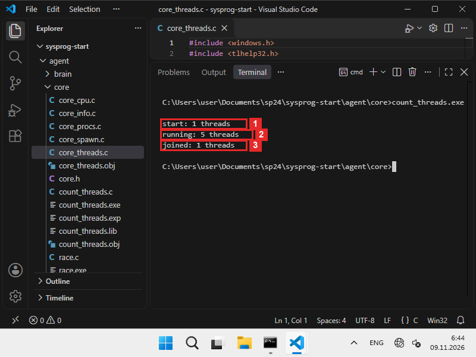
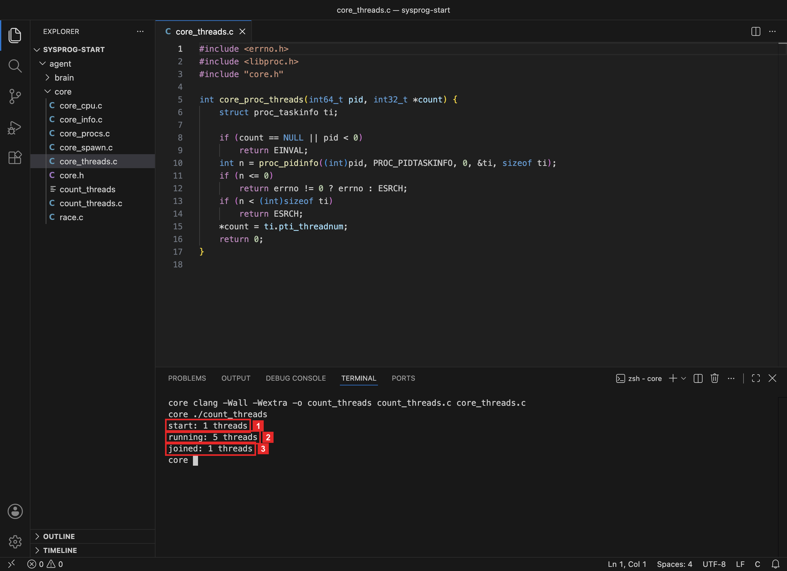
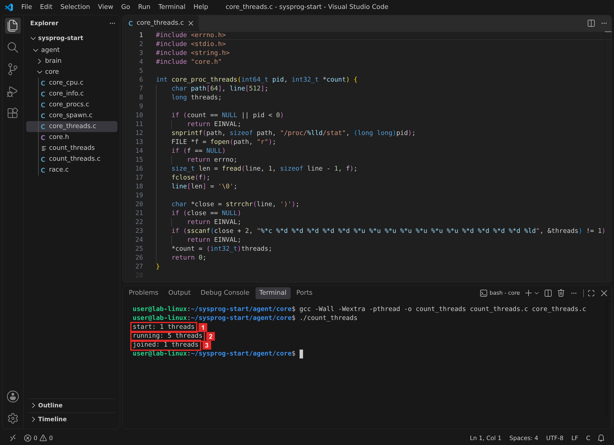
Три числа складываются в картину жизни процесса:
Сколько потоков у count_threads в каждый момент
start
1 потоктолько главныйrunning
5 потоковглавный и четыре рабочихjoined
1 потокрабочие завершеныЧисла одинаковы на трёх системах — так на кадрах шага 3.
Главный поток есть всегда, рабочие появляются при создании и исчезают после ожидания. Если бы программа не дождалась потоков и не освободила их, число не вернулось бы к единице: так выглядит утечка потоков.
Что делает count_threads
main — бригадир. В начале смены он один: 1 поток. Потом он нанимает четырёх рабочих и каждому даёт одно задание — поспать секунду. Пока рабочие на смене, людей пятеро: 5 потоков.
Домой бригадир не уходит, пока каждый рабочий не отчитается. Все отчитались и ушли — бригадир снова один: 1 поток. Если бы он не ждал отчётов и не отпускал людей, рабочие так и числились бы на смене — это и есть утечка потоков.
start
бригадир один1 потокrunning
бригадир и 4 рабочих5 потоковjoined
рабочие ушлиснова 1 потокЧто есть что. Бригадир — главный поток. Нанять рабочего — CreateThreadpthread_create. Задание — функция worker. Дождаться отчёта — WaitForMultipleObjectspthread_join.
Что получилось.Ядро видит, как у процесса появляются и исчезают потоки. Можно подключать функцию к мозгу.
§5Шаг 4. Число потоков в Python
Библиотека ядра теперь собирается из пяти файлов:
cl /nologo /W4 /LD core_info.c core_procs.c core_spawn.c core_cpu.c core_threads.c /Fe:sentry_core.dll
clang -Wall -Wextra -shared -fPIC -o libsentry_core.dylib core_info.c core_procs.c core_spawn.c core_cpu.c core_threads.c
gcc -Wall -Wextra -shared -fPIC -o libsentry_core.so core_info.c core_procs.c core_spawn.c core_cpu.c core_threads.c
В brain.py добавляются типы новой функции после типов core_proc_cpu и функции proc_threads и most_threads после cpu_load:
core.core_proc_threads.argtypes = [ctypes.c_int64, ctypes.POINTER(ctypes.c_int32)] core.core_proc_threads.restype = ctypes.c_int def proc_threads(pid): count = ctypes.c_int32() if core.core_proc_threads(pid, ctypes.byref(count)) != 0: return None return count.value def most_threads(n=3): found = [] for p in list_procs(): count = proc_threads(p["pid"]) if count is not None: found.append({"pid": p["pid"], "name": p["name"], "threads": count}) return sorted(found, key=lambda x: x["threads"], reverse=True)[:n]
Разбор новых частей brain.py по строкам
Разбор brain.py · новые части по шагамвсе системы
Зачем эта программа. Дать мозгу две функции: proc_threads — число потоков одного процесса, most_threads — процессы, у которых потоков больше всего.
core.core_proc_threads.argtypes = [ctypes.c_int64, ctypes.POINTER(ctypes.c_int32)] core.core_proc_threads.restype = ctypes.c_int def proc_threads(pid): count = ctypes.c_int32() if core.core_proc_threads(pid, ctypes.byref(count)) != 0: return None return count.value def most_threads(n=3): found = [] for p in list_procs(): count = proc_threads(p["pid"]) if count is not None: found.append({"pid": p["pid"], "name": p["name"], "threads": count}) return sorted(found, key=lambda x: x["threads"], reverse=True)[:n]
- Описать функцию ядра
Номер процесса —
c_int64, ответ — адресc_int32. - proc_threads: число потоков
ctypes.c_int32()— место для ответа,byrefпередаёт его адрес. Если процесс не читается, функция возвращаетNone, какproc_cpuв главе 2.3. - most_threads: самые многопоточные
Для каждого процесса из
list_procsберётся число потоков; недоступные пропускаются. Список сортируется по убыванию, срез[:n]оставляет первыеn.
Блок запуска меняется: мозг запускает ребёнка — Python с четырьмя потоками, каждый спит 3 секунды. Через секунду, пока потоки живы, мозг спрашивает число потоков ребёнка и ищет три самых многопоточных процесса:
if __name__ == "__main__": child = spawn([sys.executable, "-c", "import threading, time\n" "ts = [threading.Thread(target=time.sleep, args=(3,)) for _ in range(4)]\n" "for t in ts: t.start()\n" "for t in ts: t.join()"]) time.sleep(1) message = {"event": "agent_started", "os": sys.platform, **get_info(), "child": child.pid, "child_threads": proc_threads(child.pid), "most_threads": most_threads(3)} wait(child, 5000) print(json.dumps(message, ensure_ascii=False, indent=2)) if len(sys.argv) > 1: status, body = send(message, sys.argv[1]) print("n8n:", status, body)
cd ..\brain python brain.py
cd ../brain python3 brain.py
cd ../brain python3 brain.py
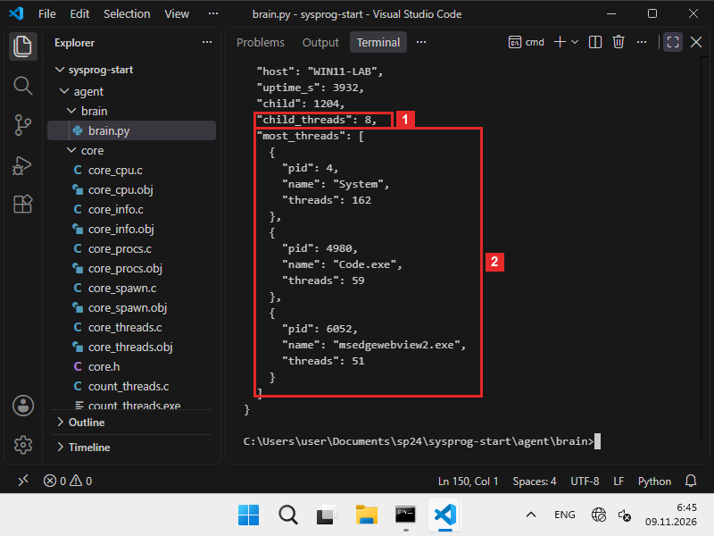
System — 162, у Code.exe — 59, у msedgewebview2.exe — 51.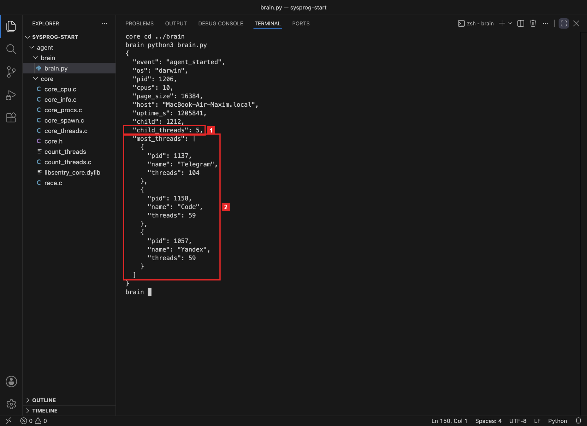
Telegram — 104, у Code и Yandex — по 59.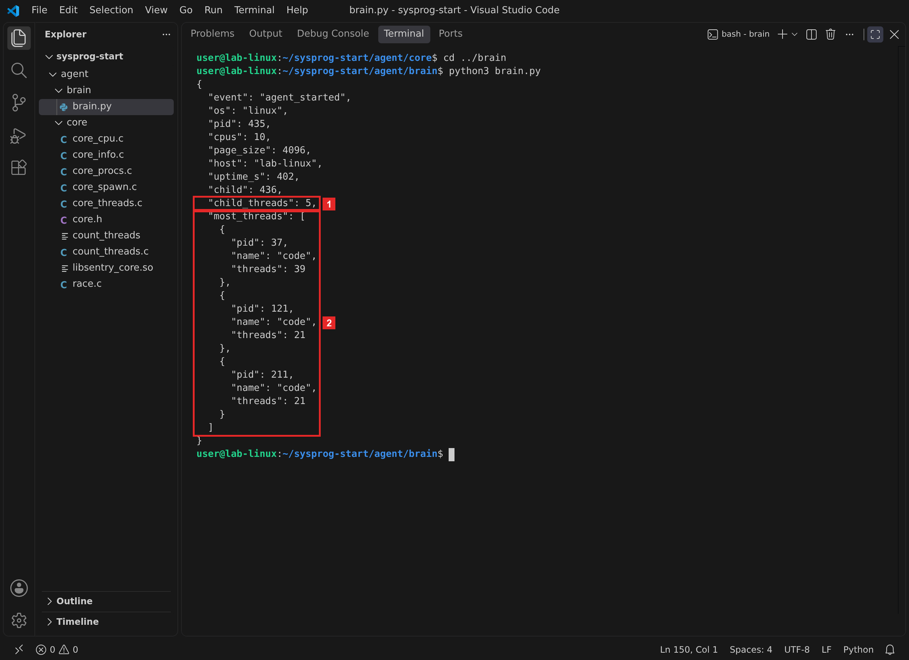
code — 39, 21 и 21.Пять потоков ребёнка — четыре спящих и главный, как в ЛР 7.Восемь потоков ребёнка — четыре спящих, главный и три служебных потока, которые Python держит в Windows, как в ЛР 7. Первые места в списке занимают ядро системы System и программы с встроенным браузероммессенджер, редактор и браузерпроцессы VS Code — в контейнере других программ нет: у больших программ десятки потоков. Тревожный признак — число, которое растёт и не падает.
Что получилось.Мозг знает число потоков любого доступного процесса и находит самые многопоточные. Осталось отправить работу в репозиторий.
§6Шаг 5. Отправить в репозиторий
В репозиторий уходят исходники: core.h, core_threads.c, count_threads.c и brain.py. В agent/core/README.md дописываем строку о core_threads.c и сборке библиотеки из пяти файлов.
git add agent/core/core.h agent/core/core_threads.c agent/core/count_threads.c agent/core/README.md agent/brain/brain.py git commit -m "core: core_proc_threads — число потоков, brain: proc_threads и most_threads" git push
Перед git add посмотрите git status: собранную count_threads.exe и файлы .obj, .lib, .expcount_threads допишите в .gitignore, если их там нет. Новой проверки в этой паре нет: «Проверки» собирают библиотеку с core_threads.c и прогоняют проверки 1 и 2.
Что получилось.Ядро и мозг с числом потоков в репозитории. Последняя часть — ошибка, которую помощник ИИ допускает в коде с потоками.
§7Запрос к помощнику ИИ
Код с потоками помощник пишет быстро, и он даже работает. Ошибка прячется в общей переменной, которую меняют сразу несколько потоков. Запрос в режиме Р2 из главы 0.3:
Напиши на C для WindowsmacOSLinux программу: 4 потока по миллиону раз увеличивают общий счётчик, в конце напечатать его значение.
Частый ответ — volatile long long counter и counter++ в цикле. volatile заставляет каждый раз читать переменную из памяти — помощник ставит его, «чтобы потоки видели изменения». Но counter++ — три действия: прочитать, прибавить, записать. Между ними вклинивается другой поток:
Как два потока теряют одну прибавку
| Шаг | Поток A | Поток B | counter в памяти |
|---|---|---|---|
| 1 | прочитал 41 | 41 | |
| 2 | прочитал 41 | 41 | |
| 3 | прибавил, записал 42 | 42 | |
| 4 | прибавил, записал 42 | 42 |
counter++ — три действия: прочитать, прибавить, записать. Между ними другой поток успевает прочитать старое значение. Две прибавки — а счётчик вырос на одну.
Читаем сверху вниз: оба потока прочитали 41, оба записали 42 — одна прибавка пропала. Это гонка: итог зависит от того, кто успел первым. volatile её не лечит. Лечит атомарная прибавка — процессор делает все три действия за один неделимый шаг. Так написан race.c:
#include <stdio.h> #ifdef _WIN32 #include <windows.h> #define ADD(p) InterlockedIncrement64(p) #define THREAD_FN DWORD WINAPI #define THREAD_END 0 #else #include <pthread.h> #define ADD(p) __atomic_fetch_add(p, 1, __ATOMIC_SEQ_CST) #define THREAD_FN void * #define THREAD_END NULL #endif #define WORKERS 4 #define STEPS 1000000 static long long counter = 0; static THREAD_FN worker(void *arg) { (void)arg; for (int i = 0; i < STEPS; i++) ADD(&counter); return THREAD_END; } int main(void) { #ifdef _WIN32 HANDLE t[WORKERS]; for (int i = 0; i < WORKERS; i++) t[i] = CreateThread(NULL, 0, worker, NULL, 0, NULL); WaitForMultipleObjects(WORKERS, t, TRUE, INFINITE); for (int i = 0; i < WORKERS; i++) CloseHandle(t[i]); #else pthread_t t[WORKERS]; for (int i = 0; i < WORKERS; i++) pthread_create(&t[i], NULL, worker, NULL); for (int i = 0; i < WORKERS; i++) pthread_join(t[i], NULL); #endif printf("counter = %lld, expected %d\n", counter, WORKERS * STEPS); return 0; }
Разбор race.c по строкам
Разбор race.c по шагамвсе системы
Зачем эта программа. Четыре потока по миллиону раз прибавляют единицу к общему счётчику. Должно получиться 4 000 000.
#include <stdio.h> #ifdef _WIN32 #include <windows.h> #define ADD(p) InterlockedIncrement64(p) #define THREAD_FN DWORD WINAPI #define THREAD_END 0 #else #include <pthread.h> #define ADD(p) __atomic_fetch_add(p, 1, __ATOMIC_SEQ_CST) #define THREAD_FN void * #define THREAD_END NULL #endif #define WORKERS 4 #define STEPS 1000000 static long long counter = 0; static THREAD_FN worker(void *arg) { (void)arg; for (int i = 0; i < STEPS; i++) ADD(&counter); return THREAD_END; } int main(void) { #ifdef _WIN32 HANDLE t[WORKERS]; for (int i = 0; i < WORKERS; i++) t[i] = CreateThread(NULL, 0, worker, NULL, 0, NULL); WaitForMultipleObjects(WORKERS, t, TRUE, INFINITE); for (int i = 0; i < WORKERS; i++) CloseHandle(t[i]); #else pthread_t t[WORKERS]; for (int i = 0; i < WORKERS; i++) pthread_create(&t[i], NULL, worker, NULL); for (int i = 0; i < WORKERS; i++) pthread_join(t[i], NULL); #endif printf("counter = %lld, expected %d\n", counter, WORKERS * STEPS); return 0; }
- Атомарная прибавка и функция потока
ADDприбавляет единицу так, что другой поток не вклинится посередине:InterlockedIncrement64в Windows,__atomic_fetch_addв clang и gcc.THREAD_FNиTHREAD_ENDскрывают разницу между функциями потоков двух систем, чтобыworkerбыла написана один раз. - Общий счётчик
counterобъявлен вне функций: он один на весь процесс, и все потоки работают с ним. 4 потока по 1 000 000 шагов должны дать 4 000 000. - Работа потока
Миллион раз
ADD(&counter). - Запустить и дождаться потоков
Так же, как в
count_threads.c, только без проверки ошибок: программа короткая и служит только для опыта. - Сверить итог
Печатается счётчик и ожидаемое значение.
Вариант помощника получается из race.c заменой двух строк. Собираем оба и запускаем вариант помощника дважды:
powershell -c "(gc race.c) -replace 'static long long counter','static volatile long long counter' -replace 'ADD\(&counter\);','counter++;' | sc ai_race.c" cl /nologo /W4 race.c cl /nologo /W4 ai_race.c fc race.c ai_race.c race.exe ai_race.exe ai_race.exe
sed 's/static long long counter/static volatile long long counter/; s/ADD(&counter);/counter++;/' race.c > ai_race.c clang -Wall -Wextra -o race race.c clang -Wall -Wextra -o ai_race ai_race.c diff race.c ai_race.c ./race ./ai_race ./ai_race
sed 's/static long long counter/static volatile long long counter/; s/ADD(&counter);/counter++;/' race.c > ai_race.c gcc -Wall -Wextra -pthread -o race race.c gcc -Wall -Wextra -pthread -o ai_race ai_race.c diff race.c ai_race.c ./race ./ai_race ./ai_race
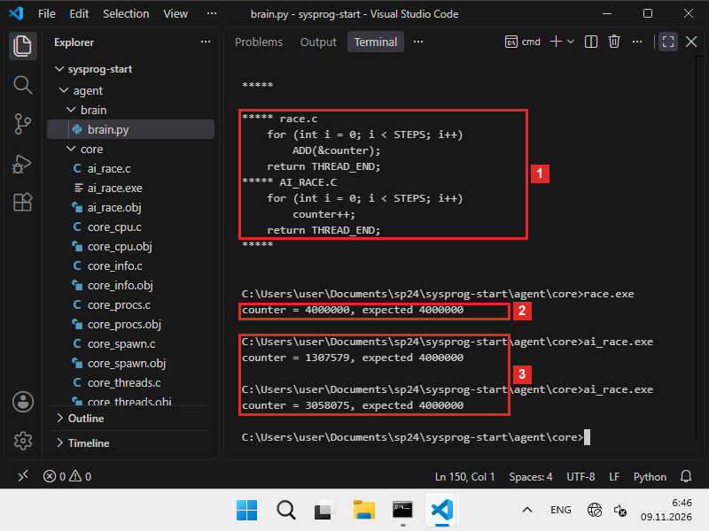
ADD(&counter) и counter++; первая, со словом volatile, уехала вверх. 2 race.exe: 4 000 000. 3 ai_race.exe: 1 307 579 и 3 058 075.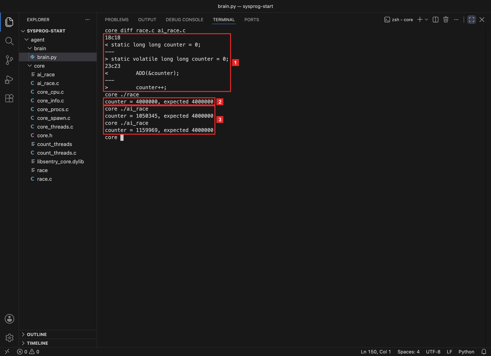
volatile и counter++. 2 race: 4 000 000. 3 ai_race: 1 050 345 и 1 159 969.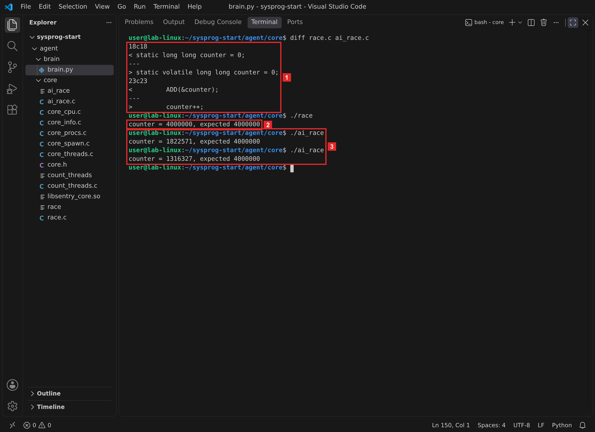
volatile и counter++. 2 race: 4 000 000. 3 ai_race: 1 822 571 и 1 316 327.Результаты трёх систем рядом:
Один и тот же счётчик: атомарная прибавка и counter++
| Система | race.c — ADD | ai_race.c — counter++, запуск 1 | запуск 2 |
|---|---|---|---|
| Windows | 4 000 000 | 1 307 579 | 3 058 075 |
| macOS | 4 000 000 | 1 050 345 | 1 159 969 |
| Linux | 4 000 000 | 1 822 571 | 1 316 327 |
Числа — с кадров. Ожидается 4 000 000; у счётчика с volatile результат каждый раз другой.
Атомарная прибавка — ровно 4 000 000 везде. counter++ теряет от четверти до трёх четвертей прибавок, и каждый запуск — новое число. Компилятор молчит, а на одном ядре ошибки не видно вовсе: её находят уже на сервере.
Почему теряются прибавки
На доске написано число. Четыре человека должны каждый миллион раз сделать «+1». counter++ — это три движения: подойти и посмотреть число, прибавить в уме, стереть и написать новое.
Если двое подошли почти одновременно, оба увидели 41, оба прибавили в уме и оба написали 42. Сделано две прибавки, а число выросло на одну. volatile — это правило «смотри на доску, а не вспоминай»: смотрят честно, но подойти вдвоём всё ещё можно. Атомарная прибавка — счётчик-кликер: нажал кнопку, число выросло, и нажать «посередине» чужого нажатия нельзя.
поток A
смотрит: 41поток B
смотрит: 41поток A
пишет 42поток B
пишет 42вместо 43 на доске 42Что есть что. Доска — переменная counter в памяти. Посмотреть — чтение, написать — запись. Кликер — InterlockedIncrement64__atomic_fetch_add.
- каждая переменная, которую меняют несколько потоков, меняется атомарной операцией или под замком:
InterlockedIncrement64,SRWLOCK__atomic_fetch_add,pthread_mutex_t; volatileне считается защитой от гонки;- каждый запущенный поток дожидаются:
WaitForMultipleObjectsиCloseHandlepthread_join; - программа проверки сверяет итог с ожидаемым и запускается несколько раз на компьютере с несколькими ядрами.
Первые три пункта проверяются чтением кода, последний — запуском.
§8Справка: функции и команды
Таблица функций трёх систем
| Что нужно | Windows | macOS и Linux |
|---|---|---|
| Число потоков процесса | снимок Toolhelp32, cntThreads | pti_threadnum / поле 20 /proc/PID/stat |
| Запустить поток | CreateThread | pthread_create |
| Функция потока | DWORD WINAPI f(LPVOID) | void *f(void *) |
| Дождаться потоков | WaitForMultipleObjects, затем CloseHandle | pthread_join |
| Атомарная прибавка | InterlockedIncrement64 | __atomic_fetch_add |
| Номер своего процесса | GetCurrentProcessId | getpid |
| Собрать программу с потоками | cl без ключей | macOS — без ключей, Linux — gcc -pthread |
§9Частые вопросы
Четыре частых заблуждения о потоках
volatile делает переменную безопасной для потоков.volatile только запрещает компилятору держать копию в регистре. counter++ остаётся тремя действиями, и на кадрах из 4 000 000 прибавок дошло от 1 050 345 до 3 058 075.§10Проверьте себя
Почему у core_proc_threads нет своей структуры?
Ответ — одно целое число. Его записывают по адресу count, как count у core_list_procs в главе 2.1.
Сколько потоков покажет count_threads во время работы и почему?
Пять: главный поток и четыре рабочих. До их запуска и после ожидания — один.
Что будет, если не вызвать WaitForMultipleObjectspthread_join?
main завершится раньше рабочих потоков, и процесс закончится вместе с ними. В программе, которая работает долго, незавершённые и не освобождённые потоки копятся — это утечка.
Почему counter++ из четырёх потоков теряет прибавки?
Это чтение, сложение и запись. Два потока читают одно и то же значение, каждый прибавляет единицу и записывает — одна прибавка пропадает.
Чем атомарная прибавка отличается от counter++?
Процессор выполняет чтение, сложение и запись как одно неделимое действие, и другой поток не может вклиниться посередине.
§11Шпаргалка по главе
core_proc_threads(pid, &count)cntThreadspti_threadnumполе 20 statCreateThread → дескрипторpthread_create(&t, NULL, f, arg)WaitForMultipleObjects, CloseHandlepthread_joinproc_threads(pid) — число или Nonemost_threads(3) — самые многопоточныеcounter++ из потоков теряет прибавкиатомарная операция или замокИтог главы
- Число потоков система хранит сама —
core_proc_threadsего только читает. - Потоки запустили и дождались: 1 → 5 → 1. Не дождаться — утечка.
- Мозг нашёл у ребёнка 85 потоков и три самых многопоточных процесса.
- Общую переменную из потоков меняют только атомарно или под замком:
counter++сvolatileтеряет прибавки.
Откуда взяты факты
- Кадры и выводы: macOS 26.1, Apple clang 17, Python 3.9 из Command Line Tools; Linux — контейнер Debian 13, gcc 14.4, Python 3.13; Windows 11 ARM64 в VirtualBox, MSVC 19.44 (программы собраны для ARM64), Python 3.14 для ARM64.
CreateToolhelp32Snapshot,PROCESSENTRY32W.cntThreads,CreateThread,WaitForMultipleObjects,InterlockedIncrement64— Microsoft Learn, PROCESSENTRY32W и соседние страницы.proc_taskinfo.pti_threadnum— заголовокsys/proc_info.hSDK macOS;pthread_create,pthread_join— man 3 pthread_create.- Поле 20
num_threads— man 5 proc_pid_stat;__atomic_fetch_add— GCC, __atomic Builtins.